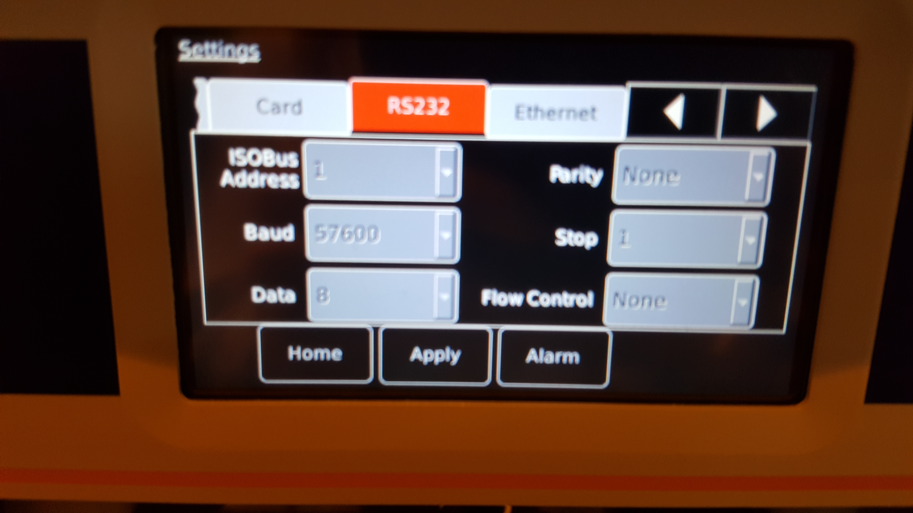
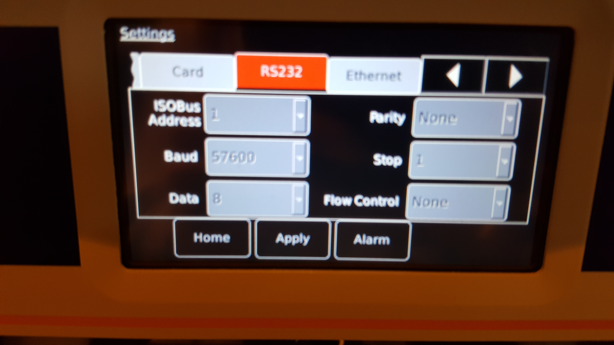
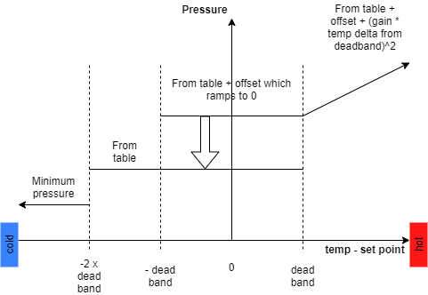

Mercury iTC
The Mercury iTC is a configurable temperature controller from oxford instruments ( Manual ).
It contains various slots into each slot a variety of devices can be placed. For the purposes of this document the motherboard is treated as a slot too, it contains a temperature sensor and a heater.
Types of daughter boards are:
temperature sensor
Heater
Auxiliary board (general purpose and stepper motors)
Pressure sensor
Cryogen
GPIB board (communications)
Communications
The device should be talked to via serial (RS232 / ISOBUS in OI terms) at a baud rate of 57600. This is variable on the front panel, but only while the device is in local mode (when the box in the bottom left of the home screen doesn’t have an orange background).
The configuration screens look like:
 

Driver
Currently, the driver only measures and sets the following:
Temperature
He Level
Pressure
and allows control of:
Pressure based on temperature (used initially for the little blue cryostat)
There is a section on each below as well as how to set the communication settings.
Temperature
Setup
To activate a card you must set the related IOC macro. The following macros set the for the possible IOC slot:
Macro |
IOC Name |
|---|---|
MERCURY_01__TEMP_1 |
%MYPVPREFIX%MERCURY_01:1 |
MERCURY_01__TEMP_2 |
%MYPVPREFIX%MERCURY_01:2 |
MERCURY_01__TEMP_3 |
%MYPVPREFIX%MERCURY_01:3 |
MERCURY_01__TEMP_4 |
%MYPVPREFIX%MERCURY_01:4 |
MERCURY_01__LEVEL_1 |
%MYPVPREFIX%MERCURY_01:LEVEL:1 |
MERCURY_01__LEVEL_2 |
%MYPVPREFIX%MERCURY_01:LEVEL:2 |
MERCURY_01__PRESSURE_1 |
%MYPVPREFIX%MERCURY_01:PRESSURE:1 |
MERCURY_01__PRESSURE_2 |
%MYPVPREFIX%MERCURY_01:PRESSURE:2 |
etc |
To find out what values these macros should take, connect the mercury IOC and check the “System” tab on the opi, which will list the cards which are currently present.
Example: If the list of Temperature cards displayed on the system tab is [“MB1.T1”, “DB1.T1”, “DB2.T1”] you should set the following macros:
TEMP_1:MB1.T1TEMP_2:DB1.T1TEMP_3:DB2.T1TEMP_4: (empty string)
Important PVs
TEMPCurrent temperatureTEMP:SPSetpoint for temperature controllerTEMP:SP:RVRead back of the set temperature pointNAMEName associated with the card
He Level
The helium level can be monitored by setting the macro LEVEL_N to point at the correct vi in a similar fashion to the temperature.
Pressure
A pressure card can be monitored by setting the macro PRESSURE_N to point at the correct vi in a similar fashion to the temperature.
Software Pressure Control
The little blue cryostat has a software pressure control mode to save Helium. The pressure set point, and in turn the needle value opening range, is set based on the set point and current temperature. There is a PV to set this to be on for the Mercury, in addition this will turn on Temperature PID, heater and pressure flow rate automatic settings and turn off the temperature flow rate automatic setting. The pressure will be set base on four regimes based on the temperature - setpoint:
Less than - 2x the temperature deadband: Pressure is set to
minimum pressure. The idea is to let the cell warm up as quickly as possible.from -2x to -1x the deadband: Pressure is set to the value for the temperature from the table. The cell needs to warm up but more slowly.
from -1x to 1x the deadband: Pressure is set to the value for the temperature from the table + a ramp is added from the offset to 0. Cell is the right temperature reduce the offset we used for extra cooling to be 0.
above the deadband: Pressure is set to the value for the temperature from the table + offset + a value proportion to the square of the gain * distance above deadband the temperature is. Increase the pressure to cool the cell as quickly as possible reducing extra cool as we get near the deadband.
Temperature pressures are then coerced to be between a minimum and maximum pressure.

To enable the full auto control the FULL_AUTO_PRESSURE1` macros must be set.
A full list of macros to set are:
Macro |
Default |
Purpose |
|---|---|---|
SPC_PRESSURE_X |
blank |
The index of the pressure card to control for temperature card X |
SPC_MIN_PRESSURE |
0 |
Minimum pressure allowed |
SPC_MAX_PRESSURE |
- |
Maximum pressure allowed |
SPC_TEMP_DEADBAND |
- |
Deadband for the temperature and setpoint |
SPC_OFFSET |
- |
Offset from which the ramp is reduced |
SPC_OFFSET_DURATION |
- |
Time in minutes over which the offset is reduced |
SPC_GAIN |
- |
Gain term for the extra pressure |
The pressures for the various temperature setpoints are read from ...Settings\config\common\other_devices\little_blue_cryostat.txt
Example
In this example, the front panel (home screen) on the Mercury looks like:

NB The device should be in remote mode this is indicated by the i (bottom left) having an orange background. This mercury has 3 temperature sensors, Sample_Rod, VTI_DB6 and PT2_DB7, the VTI has a heater attached to the second temperature.
The temperature controls are on the 1st and 2nd temperature and so on the first and second tab on the mercury device screen. NB the device screen also needs these macros set.
For info here is a detailed temp loop:

OPI
The OPI has macros that relate to the macros set at the IOC level.
Outdated Macros
There are some MercuryiTCs which are using outdated macros (in the format VI_…). See below for where these are located.
Instrument |
Configuration/Component |
|---|---|
LET |
LET_Mercury |
OSIRIS |
OSIRIS_Mercury |
MAPS |
mercury_itc |
GEM |
Mercury_cryostat |
SANDALS |
GEM_mercury |
IRIS |
triton |
ZOOM |
isisstat |
LARMOR |
ISISSTAT |
If you use one of these MercuryiTCs could you please:
add and configure the new macros if they have not yet been added
configure the new macros if they exist but have not yet been configured
The new macros and how to configure them can be found in Setup section above:
Troubleshooting
Mercury doesn’t communicate
One issue we have seen is that when the Mercury is transferred between instruments, or during some initial configuration, a user will change values like the Baud rate. It’s good practice to check the devices settings (baud rate etc).
Ensure that it is set to remote mode. On the front panel the i, bottom left, should have an orange background.
Pressure card won’t read heater voltage correctly
This may be accompanied by an error in the ioc log:
2019/12/15 16:18:04.417 TE:NDW1799:MERCURY_01:PRESSURE:2:HEATER:VOLT devAsynFloat64 process read error lvDCOMDriver:readFloat64: status=0, function=13, name=HEATER:VOLT, value=0.000000, error=LabVIEW : parameter %p not found in the VI's connector pane. : IDispat
If this is the case, you need to get the latest version of Mercury - Pressure.vi from sourcesafe. Older versions had two parameters with the same name, which LvDCOM could not cope with correctly.
Cannot input IOC macros of the form MB0.T1
You may need to rebuild ioc startups on the instrument - Release 7.1.0 initially shipped with a regex which was too restrictive and did not allow . as a character.
To do this:
Ensure it is ok to shutdown ibex temporarily (i.e. check with scientist and ensure script/dae is not running)
Run
stop_ibex_server.batRun
make iocstartupsfromC:\instrument\apps\epics(it is ok if this complains about some missing directories)Run
start_ibex_server.bat
Mercury is not talking to any cards
Ensure that IOC macros have been set which correctly correspond to the cards in the mercury itself. You can check which cards are currently in the mercury by looking at the “system” tab in the opi. The macros should be strings of a form similar to “DB1.T1”
Mercury is not reading a heater/needle valve correctly on a temperature/pressure card
In the details screen of the OPI, check that the associated heater channel (for heaters) or associated aux channel (for needle valves) is not None. If it is None, check with the scientist/cryogenics whether a heater/needle valve should be configured for this channel.